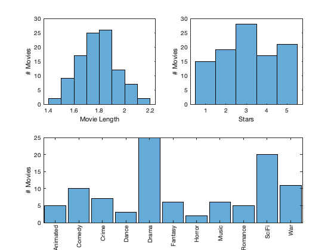
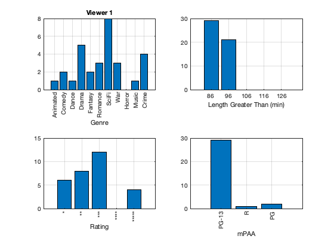
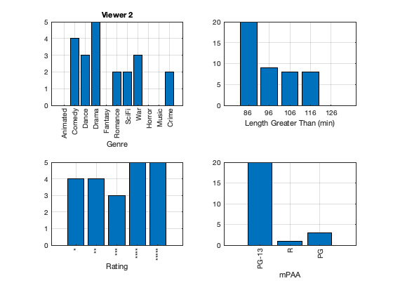
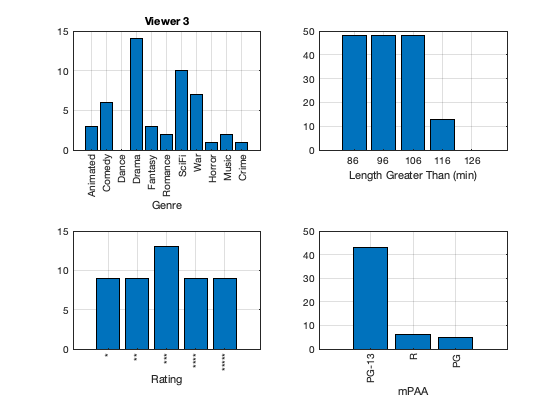
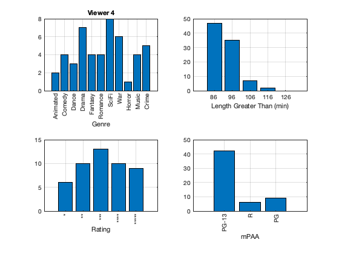
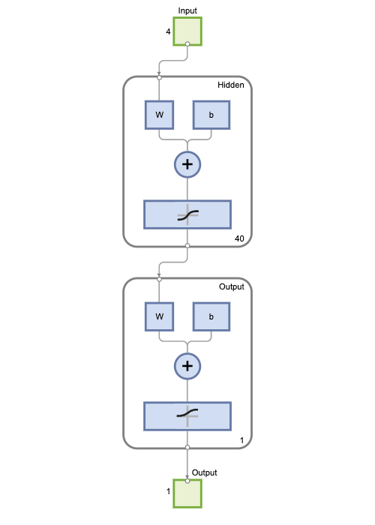
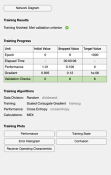
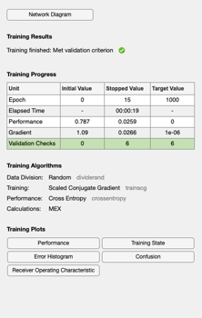

Script to implement the neural net to guess movies watched
The neural net will categorize each movie as one that a viewer would watch or one they would not. This might be used to suggest movies to viewers. It uses the model in CreateMovieViewers.
Contents
See also
CreateMovieDatabase, CreateMovieViewers
Data
genre = { 'Animated', 'Comedy', 'Dance', 'Drama', 'Fantasy', ...
'Romance', 'SciFi', 'War', 'Horror', 'Music', 'Crime'};
mPAA = {'PG-13','R','PG'};
rating = {'*' '**' '***' '****' '*****'};
The movies
s = load('Movies.mat'); NewFigure('Movie Data') subplot(2,2,1) histogram(s.d.length) xlabel('Movie Length') ylabel('# Movies') subplot(2,2,2) histogram(s.d.rating) xlabel('Stars') ylabel('# Movies') subplot(2,1,2) histogram(categorical(s.d.genre)) ylabel('# Movies') set(gca,'xticklabelrotation',90)
ans =
Figure (1: Movie Data) with properties:
Number: 1
Name: 'Movie Data'
Color: [0.94 0.94 0.94]
Position: [560 528 560 420]
Units: 'pixels'
Use GET to show all properties
 The movie viewers
nViewers = 4; mvr = CreateMovieViewers( nViewers, s.d ); % Display the movie viewer's data lX = linspace(min(s.d.length),max(s.d.length),5); for k = 1:nViewers NewFigure(sprintf('Viewer %d',k)); subplot(2,2,1); g = zeros(1,11); for j = 1:length(mvr{k}) i = mvr{k}(j); l = strmatch(s.d.genre{i},genre); %#ok<MATCH2> g(l) = g(l) + 1; end bar(1:11,g); set(gca,'xticklabel',genre,'xticklabelrotation',90,'xtick',1:11) xlabel('Genre') title(sprintf('Viewer %d',k)) grid on subplot(2,2,2); g = zeros(1,5); for j = 1:5 for i = 1:length(mvr{k}) if( s.d.length(mvr{k}(i)) > lX(j) ) g(j) = g(j) + 1; end end end bar(1:5,g); set(gca,'xticklabel',floor(lX*60),'xtick',1:5) xlabel('Length Greater Than (min)') grid on subplot(2,2,3); g = zeros(1,5); for j = 1:length(mvr{k}) i = mvr{k}(j); l = s.d.rating(i); g(l) = g(l) + 1; end bar(1:5,g); set(gca,'xticklabel',rating,'xticklabelrotation',90,'xtick',1:5) xlabel('Rating') grid on subplot(2,2,4); g = zeros(1,3); for j = 1:length(mvr{k}) i = mvr{k}(j); l = strmatch(s.d.mPAA{i},mPAA); %#ok<MATCH2> g(l) = g(l) + 1; end bar(1:3,g); set(gca,'xticklabel',mPAA,'xticklabelrotation',90,'xtick',1:3) xlabel('mPAA') grid on end   
Train and test the neural net for each viewer
for k = 1:nViewers
% Create the training arrays x = zeros(4,100); % the input data y = zeros(1,100); % the target - did the viewer watch the movie? nMov = length(mvr{k}); % number of watched movies for j = 1:nMov i = mvr{k}(j); % index of the jth movie watched by the kth viewer x(1,j) = s.d.rating(i); x(2,j) = s.d.length(i); x(3,j) = strmatch(s.d.mPAA{i},mPAA,'exact'); %#ok<*MATCH3> x(4,j) = strmatch(s.d.genre{i},genre,'exact'); y(1,j) = 1; % movie watched end i = setdiff(1:100,mvr{k}); % unwatched movies for j = 1:length(i) x(1,nMov+j) = s.d.rating(i(j)); x(2,nMov+j) = s.d.length(i(j)); x(3,nMov+j) = strmatch(s.d.mPAA{i(j)},mPAA,'exact'); x(4,nMov+j) = strmatch(s.d.genre{i(j)},genre,'exact'); y(1,nMov+j) = 0; % movie not watched end % Create the training and testing data j = randperm(100); j = j(1:70); % train using 70% of the available data xTrain = x(:,j); yTrain = y(1,j); j = setdiff(1:100,j); xTest = x(:,j); yTest = y(1,j); net = patternnet(40); % input a scalar or row of layer sizes net = train(net,xTrain,yTrain); view(net); yPred = round(net(xTest));  
Test the neural net
accuracy = sum(yPred == yTest)/length(yTest); fprintf('Accuracy for viewer %d (%d movies watched) is %8.2f%%\n',... k,nMov,accuracy*100)
Accuracy for viewer 1 (30 movies watched) is 76.67%
Accuracy for viewer 2 (21 movies watched) is 86.67%
Accuracy for viewer 3 (49 movies watched) is 93.33%
Accuracy for viewer 4 (48 movies watched) is 83.33%
end
Copyright
Copyright (c) 2019, 2022 Princeton Satellite Systems, Inc. All rights reserved.